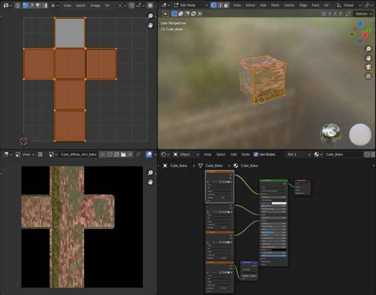

Bake Editor Panel
Video Tutorial
Here you can find a tutorial about the Bake: How to bake in the Nexus Version
Introduction
To access this panel, you must be in the Main Panel and press the Bake Editor button Here is the section of the Main Panel Bake Editor Button

Important
The bake is a fairly slow and heavy process, this tool has been designed to facilitate the Bake process, which normally in Blender is a much more complex and long process and requires a lot of experience and time.
Hint
What is the Bake?
The Bake is a process that is normally used to merge into a single material (Textures) so that it can be exported to a game engine.
Do you have to use the bake to export an object with material to a game engine?
Actually no, in fact I personally do not recommend it. The best practice (Where possible) would be to export the object and then in the game engine hook up the textures correctly in the material of the game engine. There are many different techniques and many different approaches, so there is no fixed rule, but in general it is always better to avoid the bake, unless it is strictly necessary.
Why is it sometimes better to avoid the bake?
From my point of view, it is a problem of file size, I’ll give you an example:
Suppose you have 1 house, 1 wall, 1 floor in a game, and on them there is the same material (For example cement) if you wanted to bake these 3 objects, you would have 3 different bakes, and therefore 3 different textures, while if you exported the 3 objects with the original material, you would only have 1 texture, and therefore a much smaller file. in addition, the bake makes a unique texture for each object, so this would also require a large resolution, because the cooked texture, in most cases, has no continuity! It is wrapped all over the object.
Basic Usage
At the end of the process, you will have chosen a destination path, you will find a new folder, containing all your baked textures and your model saved as Fbx (If you have chosen to export the Fbx), ready to import into another file or another software

Bake Modes
The bake editor panel has 3 different Bake Mode, depending on which mode you choose, the panel will take on a slightly different appearance in the Lighting section
{kind=link}
Output Format
{kind=link}
Here you can choose the output format of the texture, you can choose between:
(PNG, JPEG, EXR, TIFF, TGA)
Bake Device
{kind=link}
Here you can choose with which device to do the Bake, you can choose between CPU and GPU
GPU:
This is the fastest way to do the Bake! In fact, it will be the graphics card that will render the material. Keep in mind, however, if you have a GPU with relatively little RAM, you may have memory problems during the Bake, so in most cases, if during the Bake process the addon should encounter an error, it will pass silently and automatically in CPU mode and will try to render again.
CPU:
In this way the Bake will be much slower, but you should not have memory problems if your computer is equipped with at least 16GB of RAM.
These 2 indications are for information purposes only and in principle, outside there are the latest generation graphics cards that go much faster than a CPU, but there may be some cases where this rule is not necessarily valid.
Bake Samples
{kind=link}
The samples are the number of times the Bake will render the material, the higher the number of samples, the more the Bake will be precise, but also slower. This rule is almost the same as that of a normal rendering.
Bake Size
{kind=link}
Here you decide the resolution of the texture that will be created, the higher the resolution, the more detailed the texture will be, but be careful, the higher the resolution, the slower and heavier the Bake will be, in addition it will
Create new UV Map
Deprecated
This function is deprecated from Extreme PBR 4.1.114 as it has been integrated directly into the operator

If active, the addon will create a Smart projection on a new UV Map, this UV Map will be used for the Bake, so I recommend you leave this box active.
Island Margin
Deprecated
This function is deprecated from Extreme PBR 4.1.114 as it is no longer necessary

This value is used to create a margin between the islands, this margin is used to avoid the problem of bleeding, which is a problem that occurs when the Bake is done, and the texture is not perfectly aligned with the UV Map, so there is a small space between the islands, and this space is filled with the color of the adjacent island.
Margin
By default a margin is generated around UV “islands”. This is important to avoid discontinuities at UV seams, due to texture filtering and mip-mapping.
{kind=link}
Margin Type
Method to generate the margin.
- . Extend:
Extend border pixels outwards.
- . Adjacent Faces:
Fill margin using pixels from adjacent faces across UV seams.
{kind=link}
Move Bake object in a new scene
{kind=link}
Note
The Bake of Extreme PBR always creates New objects that are a copy of the original object, this is to avoid ruining the original object.
So here you can decide whether to move the Bake objects to a new scene, in this way you will not have the Bake objects in the original scene, but in a new scene. A new scene will be created where only the Bake objects will be present, and the original scene will remain unchanged.
At the end of the Bake, in the main panel, if this option is active, a button will be displayed to return to the original scene and delete the Bake scene.

Important
Make sure you don’t work in the bake scene, otherwise you could lose the work done in that particular scene.
In the Blend file a new scene is created, containing a copy of the model with a new simple PBR Material and a new UV Layout.
{kind=link}
Export FBX object
{kind=link}
If active, at the end of the Bake, an FBX of the original object will be exported, this FBX will contain the original object with the textures in the same folder.
Flip X Axis
Engines like Unreal and Unity 3D, have Global X-Y-Z axes different from Blender, so the X axis is usually reversed. If you check this box, the addon will try to invert your model on the X axis. For any problem, if you encounter any problems, please uncheck this box.
Note
This function is a bit experimental, there may be cases where the result is not what you expected. Pay attention when you use this function, and always check the final result if it is what you expect.
Lighting
{kind=link}
Direct Light
If active, it adds direct light to the Bake, so if you have a light source in your scene, this will be added to the Bake. The object will be illuminated by direct light.
Indirect Light
If active, it adds indirect light to the Bake, so if you have a light source in your scene, and for example it bounces on a floor or a wall, this light will contribute to illuminate the object, so the object will be illuminated by indirect lights even in the bake.
Note
Is possible to leave both options inactive, in this way the light of the scene will not affect the Bake, but pay attention, this can only be done in COMBINED bake mode, in fact this mode requires that one of the 2 options is active, otherwise the Bake will not even start.
Here is an example:

As can be seen from this example above, the final material (ie Bake) is very different depending on whether you choose to activate or not the direct and indirect light.
Bake maps BSDF mode
{kind=link}
Note
The bake in BSDF mode works in accordance with the Principled BSDF node, so during this process, all the maps that have been selected for the bake, will be temporarily inserted into the Base Color socket of the Principled BSDF node. This Bake mode is only possible if the BSDF node is present and connected to the Material Output node
{kind=link}
Below is a description of each option in the Bake Maps BSDF Mode:
- Diffuse
If active, the Bake will create a Diffuse texture, ie everything that is inserted in the BSDF node in the Base Color input will be baked into a Diffuse texture.
- Specular
If active, the Bake will create a Specular texture, ie everything that is inserted in the BSDF node in the Specular input will be connect in the Base Color socket and then baked into a Specular texture.
- Roughness
If active, the Bake will create a Roughness texture, ie everything that is inserted in the BSDF node in the Roughness input will be connect in the Base Color socket and then baked into a Roughness texture.
- Metallic
If active, the Bake will create a Metallic texture, ie everything that is inserted in the BSDF node in the Metallic input will be connect in the Base Color socket and then baked into a Metallic texture.
- Transmission
If active, the Bake will create a Transmission texture, ie everything that is inserted in the BSDF node in the Transmission input will be baked connect in the Base Color socket and then baked into a Transmission texture.
- Emission
If active, the Bake will create an Emission texture, ie everything that is inserted in the BSDF node in the Emision input will be connect in the Base Color socket and then baked into an Emission texture.
- Normal
If active, the Bake will create a Normal texture, ie everything that is inserted in the BSDF node in the Normal input will be connect in the Base Color socket and then baked into a Normal texture.
- Alpha
If active, the Bake will create an Alpha texture, ie everything that is inserted in the BSDF node in the Alpha input will be baked connect in the Base Color socket and then baked into an Alpha texture.
- Subsurface
If active, the Bake will create a Subsurface texture, ie everything that is inserted in the BSDF node in the Subsurface input will be connect in the Base Color socket and then baked into a Subsurface texture.
- Alpha in separate texture
- If active:
The Bake will create an Alpha texture, ie everything that is inserted in the BSDF node in the Alpha input will be connect in the Base Color socket and then baked into an Alpha texture.
- If inactive:
The Bake will create an Alpha texture and if the Diffuse item is active, a texture with the Alpha channel included in the Diffuse map will be created.
- Normal type
- (Works in accordance with the Normal item if active)
- OpenGL (+Y):
The Bake will create a Normal texture with the Y channel inverted, this is necessary for some game engines like Unity 3D.
- DirectX (-Y):
The Bake will create a Normal texture with the Y channel not inverted, this is necessary for some game engines like Unreal Engine.
Bake maps Cycles Standard mode
{kind=link}
This Bake mode uses Blender’s standard Bake mode, does not require a Principled BSDF node, and uses the options already present in blender as in this example:
{kind=link}
So for each map selected for the Bake, Extreme PBR will set the options and perform the bake.
Below is a description of each option in the Bake Maps Cycles Standard Mode:
- Diffuse
If active, the Blender Bake will be set to Diffuse and execute the Bake. So it will create and export a Diffuse texture.
- Glossy
If active, the Blender Bake will be set to Glossy and execute the Bake. So it will create and export a Glossy texture.
- Roughness
If active, the Blender Bake will be set to Roughness and execute the Bake. So it will create and export a Roughness texture.
- Emit
If active, the Blender Bake will be set to Emit and execute the Bake. So it will create and export a Emit texture.
- Transmission
If active, the Blender Bake will be set to Transmission and execute the Bake. So it will create and export a Transmission texture.
- Normal
If active, the Blender Bake will be set to Normal and execute the Bake. So it will create and export a Normal texture.
- Alpha
If active, the Blender Bake will be set to Alpha and execute the Bake. So it will create and export a Alpha texture.
- Alpha in a separate texture
- If active:
the Blender Bake will be set to Alpha and execute the Bake. So it will create and export a Alpha texture.
- If inactive:
the Blender Bake will be set to Diffuse and execute the Bake. So it will create and export a Diffuse texture with the Alpha channel included.
- Normal type
- (Works in accordance with the Normal item if active)
- OpenGL (+Y):
the Blender Bake will be set to Normal and execute the Bake. So it will create and export a Normal texture with the Y channel inverted, this is necessary for some game engines like Unity 3D.
- DirectX (-Y):
the Blender Bake will be set to Normal and execute the Bake. So it will create and export a Normal texture with the Y channel not inverted, this is necessary for some game engines like Unreal Engine.
Bake Maps Combined mode
Important
This mode necessarily needs to have activated at least one of the 2 options Direct Light or Indirect Light, otherwise the Bake will not even start.
{kind=link}
This type of Bake is practically the reproduction of the one already present in Blender as follows in the image:
{kind=link}
Hint
Do not be fooled by this introduction, this tool is very complex and does not limit itself to reproducing that of Blender, but rather to prepare all the necessary nodes, select them, bake them and save them in the format you choose. A very long and tedious process in Blender at the moment
So as already anticipated, one of the two options Direct Light or Indirect Light must be active, in this way the Bake will start and create a Combined texture.
Below is a description of each option in the Bake Maps Combined Mode:
- Diffuse
If active, the Blender Bake will be set to Diffuse and execute the Bake. So this step will be included in the resulting single texture, (So the diffuse map)
- Glossy
If active, the Blender Bake will be set to Glossy and execute the Bake. So this step will be included in the resulting single texture, (So the diffuse map)
- Transmission
If active, the Blender Bake will be set to Transmission and execute the Bake. So this step will be included in the resulting single texture, (So the diffuse map)
- Emit
If active, the Blender Bake will be set to Emit and execute the Bake. So this step will be included in the resulting single texture, (So the diffuse map)
- Alpha in separate texture
If active and the material has an Alpha map, the bake will create a separate Alpha texture, otherwise the Alpha will be included in the Diffuse texture in the Alpha channel.
Choose Bake Destination
{kind=link}
This button opens a file browser, where you can choose the destination folder of the Bake
Note
In the folder chosen as the destination (Only if the Bake has been started), a folder with the name of the current project will be created, inside of it the necessary files will be created, Images and in case you have chosen to export an FBX, also the FBX. Each object will be contained in a folder with the name of the object itself